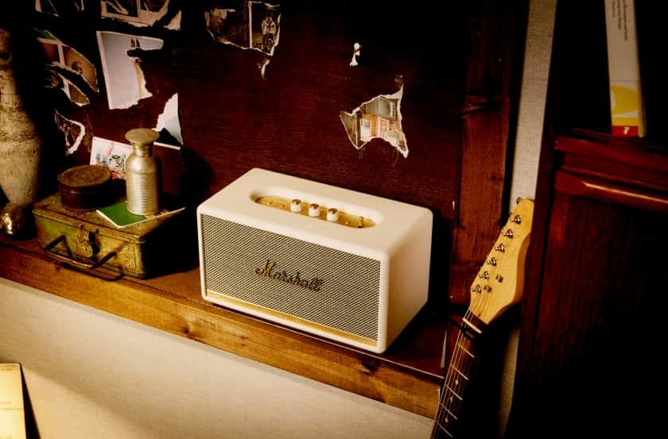

Marshall Stanmore II
¿Quieres disfrutar de un sonido de alta calidad y potencia en cualquier lugar? Entonces el altavoz Bluetooth Marshall Stanmore II es la elección perfecta para ti. Con su icónico diseño vintage y su sonido de primera clase, este altavoz te permite conectarte sin cables a cualquier dispositivo móvil y disfrutar de la música en cualquier momento y lugar.

Características principales
- Sistema de altavoces de tres vías
- Conectividad Bluetooth
- Controles analógicos clásicos
- Diseño retro y elegante
Calidad de sonido
El Marshall Stanmore II cuenta con un sistema de altavoces de tres vías que ofrece un sonido claro y potente. Los graves son profundos y resonantes, y los agudos son nítidos y detallados. Este altavoz es perfecto para escuchar música en casa o en fiestas.
Conectividad
El Marshall Stanmore II cuenta con conectividad Bluetooth para reproducir música de forma inalámbrica. También tiene un puerto de entrada auxiliar para conectar dispositivos que no tienen Bluetooth.
Diseño
El diseño del Marshall Stanmore II es impresionante, con una carcasa de vinilo gris y detalles en verde que le dan un aspecto vintage y retro. También cuenta con la icónica etiqueta de Marshall en la parte superior.